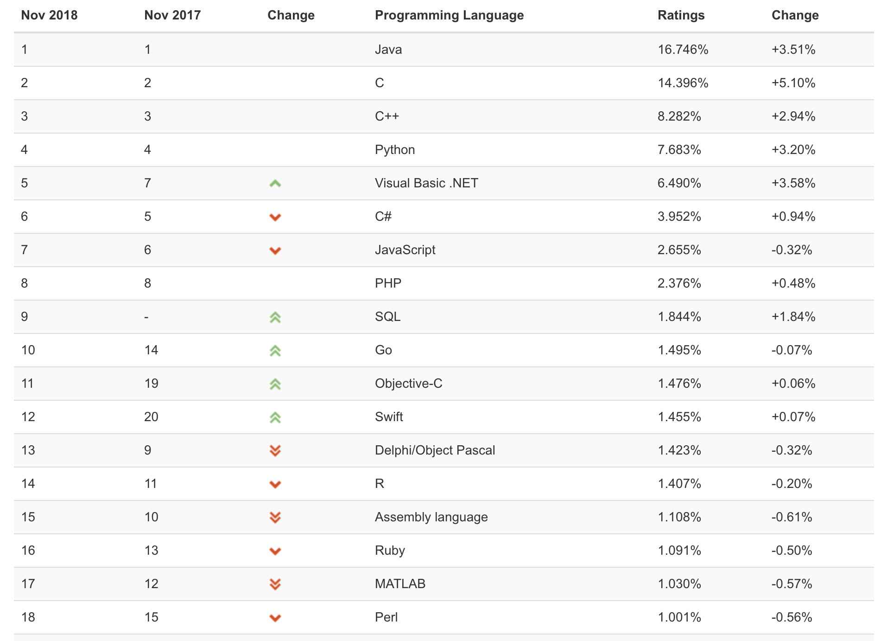

编程语言
作为一个程序员, 总是在不断的制作工具->使用工具->制作工具->使用工具的循环中
在这个循环中最重要的一个工具, 可能就是编程语言了
编程语言的种类有很多, 目前依然存在的少说也有数千种, 更不用说那些湮没在历史长河中的了, 但是真正出名的不是很多
很多人会疑惑, 为什么会有这么多编程语言呢
其实很多语言都是 在特定时期,在特定领域,为了解决特定问题而出现的
随着语言的进化, 一个语言也可能在2-3个领域获得成功, 但是我目前还没有见过一门可以 全领域通吃的编程语言
工具
编程语言是有很强工具特性的东西
其实很多编程语言都是可以做相同的事情的, 比如:
python 可以做web应用
java 可以做web应用
node 可以做web应用
go/php 可以做web应用
实际上,c/c++/ruby/lisp/lua 都是可以做web应用的, 这不是能不能的问题, 其实就是成本问题
同样, python/php/node/go也都可以做GUI应用, GUI应用其实不仅仅java/c/c++可以做
这样问题就来了, 为什么一门编程语言就能做所有事情, 还会出现那么多编程语言呢
答案是 成本.
首先, 编程语言是否流行主要看该语言使用的人数和发展趋势
在国内按人数来说目前最流行的3门语言应该是 Java,php,JavaScript
不过如果按热门程度的话(使用者增长比例),前几名应该是 Go,Python,Swift等
其他的还有一些很有特色的编程语言例如 lisp,clojure,rust等
思维
编程语言同时也会很深的影响使用者的思维方式, 一个程序员的初学语言会极大的影响这个人的思维方式
编程语言虽然都是工具,但是又不是简单的纸笔一类的工具
编程语言会切实的参与到你制作的产品当中,从这个角度看
编程语言更像是一种原材料
同时每一门编程语言基本都蕴含了一套思想体系,无论是c/c++,还是Java/python
很多计算机科学家都建议大家使用设计上来说比较优秀的编程语言来进行使用,这是有道理的
有的语言偏重工程,有的语言重学术, 有的重开发效率,有的重视执行效率,除去这些表面的特性差别,有的语言提倡干净简单,有的提倡完善强大.
初学者没必要大纠结这些语言的倾向
一个现象
我观察到很多刚学编程的人有一种心理
老是想学”最好的”编程语言, 这个最好的标准可能是最通用, 性价比最高,最有挑战性等等
而且还有一部分人有另一种不好的想法:
看不起使用者人数众多的语言,希望通过标新立异来表明自己是个多么有独立见解,好像这样就能显得自己多有思想一样
看Java使用者众多就看不起Java, 心里想着你看你就会Java,这玩意大家都会, 你看看我会的scala/lisp/rust, 多高大上啊, 你不会吧
也就是所谓的要求高逼格
逼格来源于门槛,不应该是仅仅根据使用人数来界定, 门槛高的东西注定懂的人不会多, 用的人少并不会带来逼格
我的看法
从我个人的角度我觉得如果把编程语言领域比作金庸先生书中的江湖
c/c++/Java这种就是传统的武林豪门少林/武当这种
或许在大部分书中这些门派都不是最强的,但一定是不会太差,处于平均水准以上
虽然’九阴真经’,’北冥神功’这种级别的绝世武功也大多不是出于少林武当
但是,这种绝世武功不是适合所有人的
高收益往往伴随着高风险
所以还是建议大家多看,多学,增广见闻
见的多了,看得多了,了解的多了,最后根据自己的需要去选择,不要一开始就去选择拒绝
“当你拒绝一个事物,你就失去了向他学习的机会”
编程语言的分类
大概列举一下常见的编程语言和应用的领域
主要领域:
Web应用: 以网站和浏览器为载体向用户提供服务的应用, 例如: 百度,谷歌等 特点: 使用方便,交互友好,更新迅速
服务器编程: 提供数据存储和服务的应用, 例如:各种软件平台,操作系统,数据库等服务. 特点: 功能专一,性能要求高,稳定性要求高
网络和存储: 基于socket的服务,类型比较多, 多以数据交互和通信为主
嵌入式: 各种嵌入式设备, 属于偏硬件的编程系统
图形: 基于openGL/dx3d/vulkan等图形技术进行图像绘制和处理的服务
游戏: 形式比较多,性能要求高
数据分析: 大数据,AI都属于数据分析的范畴
移动端: iOS,Android等
各语言在各领域的分布
java: 主要服务器编程,大数据处理,安卓移动端,web端
c: 系统底层编程, 网络编程, 嵌入式设备
c++: 图形和游戏,系统底层服务,服务器端
python: 数据分析, web应用,以及很多的小工具或者作为嵌入式的脚本语言在各种系统中出现
javascript: web应用, 服务器编程, 移动应用
php: web应用和服务器编程
go: web应用, 网络编程 ,服务器编程
swift/object-c: 移动端(iOS), 服务器端
其他
我这里大概谈一些我对编程语言的看法
我在工作中发现有不少的人都有一种倾向就是看不起其他编程语言的使用者
用php的看不起用js的, 用java的看不起用php的, 用c的看不起用java的, 用lisp的看不起其他所有人(^_^)
其实这是不可取的, 编程语言并不是程序的全部, 甚至都不是程序最重要的部分
每种语言都有不同的适用场景, 不谈业务场景而只说语言好坏都是耍流氓
我们正确的态度应该是就事论事,而不是因为用的工具不同互相diss
Finally
不过我也确实觉得有一些语言确实很有潜力, 但这不是说这些语言多好
只是说他们可能更适合将来的一段时间的编程环境
个人认为比较有潜力的语言:Python,Go
但是之前我有一些朋友想学习编程,让我给他们推荐最适合入门的编程语言
我一般建议按照两个维度给人推荐语言,一个是技能熟练度要求, 一个是语言本身所属的类型
| 建议的熟练度级别/类型 | 编译型语言 | 脚本语言 | |
|---|---|---|---|
| 能看懂即可 | 汇编,C,C++ | PHP | |
| 最好会用 | Go | Python | |
| 最好熟悉 | Java,Go | Python,Javascript | |
| 值得深入研究 | C++,Java | Python,Javascript | |
| 兴趣爱好者 | Clojure/Rust | Javascript |
18年11月更新
最近查看tiobe的编程语言排行榜(如下), 发现了一些趋势

Python流行程度猛增
C / Java / C++ 都有比较显著的增长
脚本语言大部分普遍下降
结合这段时间各种语言的更新情况, 总结出来这么个趋势
php, js 等语言都在加入类型特性
现在的互联网服务体量越来越大, 以前的php和python的快速开发在早期的互联网时代确实很有优势, 但是现在随着互联网服务的逐渐完善, 之前在开发效率方面有优势的语言渐渐地就有点弱势了
原因有以下几点:
- 需求减少
快速开发主要服务于大量的初创公司和项目原型,随着互联网进程的发展, 会有大量的服务逐渐被废弃掉
存活下来的老服务日积月累下来越来越复杂, 之前快速开发产生的弊端越来越明显, 此时大部分都选择了其他静态语言进行重构
现在已经过了互联网蓬勃的爆发期, 对快速开发的需求也有一定程度的下降(现在由于小程序的兴起需求又有回升)
- 适用范围的缩小和新型语言的竞争
前端的工程化现在进度很快, 脚本语言以前的很多优势在前端的快速发展面前变得很鸡肋
脚本语言以前最大的优势就是开发跟用户交互的界面部分比较快速,同时还能操作后台的数据库级别的数据, 一个人可以同时做两份工作
但是现在随着社会分工的细化,有更专业的前端工程师来做跟用户交互的事情,而且做得更好, 脚本语言做数据处理等后端部分又完全不是传统静态语言的对手, 导致脚本语言现在处境很尴尬
新型的Go等语言的出现, 做到了开发速度和执行效率之间的平衡, 也抢夺了脚本语言的市场空间
所以现在的脚本语言都在不断进化, 减少动态特性, 增加稳定性, 提升执行效率, 语言新特性越来越往适合数据处理方面靠拢
Java等语言和新出的语言都在增加函数式编程的特性
随着web服务的逐步发展, 终有一天会达到前端和后端彻底分离的地步, 到那个时候就是前后端完全通过数据进行交互, 前端负责与用户的交互和收集数据, 后端负责数据的存储和计算.
但是传统的Java/C 等语言在处理数据方面, 其实不如函数式编程的语言方便
所以Java也是意识到这个趋势, 逐渐加入函数式编程特性
新型的rust, julia等编程语言也都在重视性能的同时添加了函数式编程的特性
底层语言重新崛起
最近几年 c/c++/rust等系统编程语言渐渐有重新崛起的趋势
我觉得原因是因为云计算,大数据和机器学习的需要, 因为这几个领域都是对性能要求较高的领域, 之前适合短平快的语言在这种场景下大部分都难以满足现在巨大的数据处理需求
Python之所以现在还能有大的发展一方面是因为python 语言上手简单, 不断发展
我觉得最核心的原因还是因为python 作为一个胶水语言可以很方便的作为c /c++ 这种语言之间的桥梁
用户既能享受python的简单交互的特性, 高性能部分又可以调用底层的c/c++等库来执行, 达到开发和执行效率的平衡
一些建议
建议编程初学者最好学习两个语言, 一个编译型一个脚本型
初学者建议 go/java + python / js 这样的搭配
我个人大概是这样的学习路线:
学校时期: C++, Java , PHP, JS, 都是学校时期学的, 当时就懂了个基本概念, 啥都没学会
刚工作时: C/C++, JS/node, PHP 早期工作需要
工作一段时间: Python, Go, Java 后来扩展了部分语言希望多看看, 找到自己真正喜欢的语言
未来: Scala, Rust, Clojure 现在希望能多投资Rust, 并且了解一下Clojure